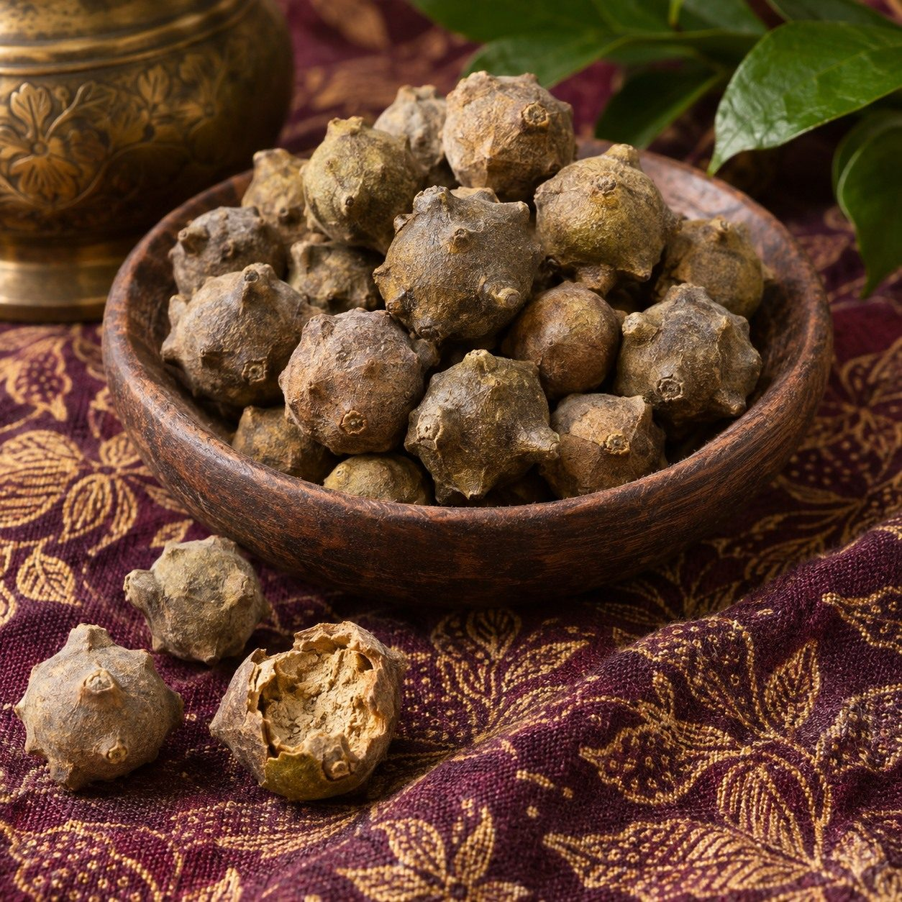

Kacip Fatimah
Labisia pumila
Herba renek dari lantai hutan hujan Malaysia. Secara tradisinya direbus dan diminum wanita untuk penjagaan selepas bersalin dan kesihatan sistem peranakan.
FEMORA P+ ialah minuman herba sedia diminum untuk wanita. Dua herba warisan Melayu dan ramuan klasik lapan herba, dalam satu sachet kecil.
Minuman ekstrak botani. 10 sachet x 20 ml.

Dulu, ibu dan nenek merebus Kacip Fatimah selepas bersalin dan menyimpan manjakani dalam balang di dapur. Amalannya masih elok. Yang berubah cuma masa kita.
FEMORA P+ membawa herba yang sama dalam bentuk minuman sedia diminum dalam sachet 20 ml. Koyak, minum, dan teruskan hari anda.
Kedua-duanya ada dalam FEMORA P+, dan kedua-duanya sudah lama ada dalam jamu dan amalan berpantang kita.
Labisia pumila
Herba renek dari lantai hutan hujan Malaysia. Secara tradisinya direbus dan diminum wanita untuk penjagaan selepas bersalin dan kesihatan sistem peranakan.

Quercus infectoria
Buah kecil yang keras dan kelat daripada pokok oak. Kaya dengan tanin, dan turun-temurun menjadi bahan jamu untuk penjagaan dalaman wanita, terutamanya selepas bersalin.
Ba Zhen bermaksud “lapan khazanah”. Ramuan herba Cina klasik ini sudah beratus tahun menjadi amalan wanita, lazimnya selepas haid. Dalam FEMORA P+, lapan herba ini digandingkan dengan Kacip Fatimah dan Manjakani.

Herba-herba ini sudah lama menjadi sebahagian daripada penjagaan diri wanita pada pelbagai peringkat hidup.
Yang mahu meneruskan penjagaan dalaman selepas tempoh berpantang tamat. Jika masih menyusu, tanya doktor dahulu.
Yang mahukan satu amalan herba yang ringkas di celah jadual yang padat.
Yang menganggap penjagaan dalaman sama penting dengan penjagaan luaran.
Yang mula memberi lebih perhatian kepada penjagaan diri setiap bulan.
Tiada periuk, tiada bancuhan. Koyak sachet dan minum terus.
Tiada agak-agak segenggam atau secubit. Setiap sachet 20 ml, senang dibawa ke mana-mana.
Kesemua sepuluh herba disenaraikan pada kotak dan di laman ini. Tiada “ramuan rahsia”.
Bersijil Halal JAKIM, dan dikilangkan di kilang yang bertauliah GMP dan HACCP.
Tak perlu bancuh atau rebus. Minum sebaik sahaja sachet dibuka.
Ikut sukatan pada kotak. Cadangan kami: mula selepas haid tamat, satu sachet sehari.
Jauhkan daripada cahaya matahari terus. Sekotak cukup untuk 5 hingga 10 hari.
Sebelum mula: jangan ambil jika anda hamil. Jika anda menyusu, merancang untuk hamil, ada masalah kesihatan, atau sedang mengambil ubat (contohnya ubat cair darah atau ubat hormon), tanya doktor atau ahli farmasi dahulu.
Jangan minum jika bungkusan rosak, bocor atau kembung.
Penghantaran percuma untuk 2 kotak ke atas, Semenanjung serta Sabah dan Sarawak.
3 kotak + 1 percuma, jumlah 4 kotak
RM309
RM77.25 sekotak
Penghantaran percuma, percuma 1 kotak
Pilih pakej ini4 kotak + 2 percuma, jumlah 6 kotak
RM439
Kira-kira RM73.17 sekotak
Penghantaran percuma, percuma 2 kotak
Pilih pakej iniBa Zhen bermaksud “lapan khazanah”. Ia ramuan herba Cina klasik yang sudah digunakan beratus tahun, terutamanya oleh wanita. Dalam resipi klasik, kesemua lapan bahannya berasal daripada tumbuhan dan kulat, tanpa bahan haiwan.
Ramai wanita Melayu sudah biasa dengan herba Cina seperti dang gui dalam sup herba. Ba Zhen ialah gabungan lapan herba seumpama itu dalam satu resipi.
Ya. Sijil Halal JAKIM. Sijil Pengesahan Halal Malaysia dikeluarkan untuk produk ini kepada pengilangnya, Nutrifood International Sdn Bhd, dan sah hingga 15 September 2028.
Jangan ambil jika anda hamil. Dapatkan nasihat doktor atau ahli farmasi dahulu jika anda:
Semenanjung: RM6.50. Sabah dan Sarawak: RM13.00. Penghantaran percuma untuk 2 kotak ke atas, Semenanjung serta Sabah dan Sarawak.
Tempahan dipos dalam masa 24 jam selepas bayaran atau tempahan COD disahkan.
Pilih pakej, isi alamat, dan kami sahkan tempahan anda di WhatsApp.